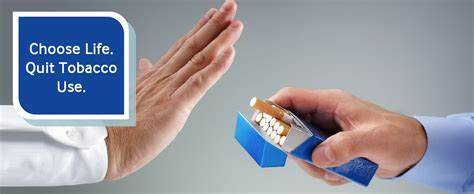

I know it's not easy because the composition of tobacco makes us addicted to tobacco and then we can't quit, but here you will find some effective ways to quit smoking.
If you want to quit smoking, it's best to do it while traveling. The new environment will help you a lot.
If you want to quit or don't want to smoke, avoid places where people smoke because the environment plays a big role.

If you want to quit smoking, reducing the dose is not an effective way, it is better if you do not reduce the dose and quit smoking altogether.